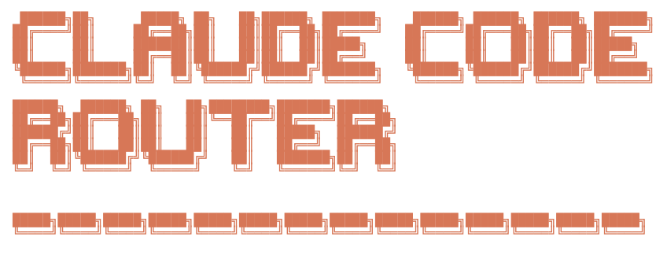
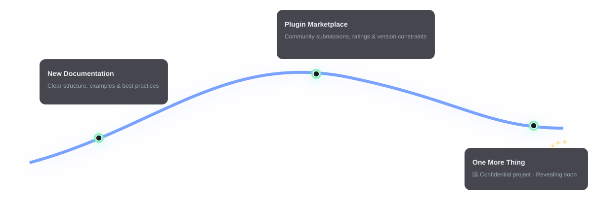

I am seeking funding support for this project to better sustain its development. If you have any ideas, feel free to reach out to me: m@musiiot.top
A powerful tool to route Claude Code requests to different models and customize any request.
Now you can use models such as
GLM-4.5,Kimi-K2,Qwen3-Coder-480B-A35B, andDeepSeek v3.1for free through the iFlow Platform.
You can use theccr uicommand to directly import theiflowtemplate in the UI. It’s worth noting that iFlow limits each user to a concurrency of 1, which means you’ll need to route background requests to other models.
If you’d like a better experience, you can try iFlow CLI.


/model command.First, ensure you have Claude Code installed:
npm install -g @anthropic-ai/claude-codeThen, install Claude Code Router:
npm install -g @musistudio/claude-code-routerCreate and configure your
~/.claude-code-router/config.json file. For more details,
you can refer to config.example.json.
The config.json file has several key sections:
PROXY_URL (optional): You can set a
proxy for API requests, for example:
"PROXY_URL": "http://127.0.0.1:7890".
LOG (optional): You can enable
logging by setting it to true. When set to
false, no log files will be created. Default is
true.
LOG_LEVEL (optional): Set the
logging level. Available options are: "fatal",
"error", "warn", "info",
"debug", "trace". Default is
"debug".
Logging Systems: The Claude Code Router uses two separate logging systems:
~/.claude-code-router/logs/ directory with filenames like
ccr-*.log~/.claude-code-router/claude-code-router.logAPIKEY (optional): You can set a
secret key to authenticate requests. When set, clients must provide this
key in the Authorization header (e.g.,
Bearer your-secret-key) or the x-api-key
header. Example: "APIKEY": "your-secret-key".
HOST (optional): You can set the
host address for the server. If APIKEY is not set, the host
will be forced to 127.0.0.1 for security reasons to prevent
unauthorized access. Example: "HOST": "0.0.0.0".
NON_INTERACTIVE_MODE (optional):
When set to true, enables compatibility with
non-interactive environments like GitHub Actions, Docker containers, or
other CI/CD systems. This sets appropriate environment variables
(CI=true, FORCE_COLOR=0, etc.) and configures
stdin handling to prevent the process from hanging in automated
environments. Example:
"NON_INTERACTIVE_MODE": true.
Providers: Used to configure
different model providers.
Router: Used to set up routing
rules. default specifies the default model, which will be
used for all requests if no other route is configured.
API_TIMEOUT_MS: Specifies the
timeout for API calls in milliseconds.
Claude Code Router supports environment variable interpolation for
secure API key management. You can reference environment variables in
your config.json using either $VAR_NAME or
${VAR_NAME} syntax:
{
"OPENAI_API_KEY": "$OPENAI_API_KEY",
"GEMINI_API_KEY": "${GEMINI_API_KEY}",
"Providers": [
{
"name": "openai",
"api_base_url": "https://api.openai.com/v1/chat/completions",
"api_key": "$OPENAI_API_KEY",
"models": ["gpt-5", "gpt-5-mini"]
}
]
}This allows you to keep sensitive API keys in environment variables instead of hardcoding them in configuration files. The interpolation works recursively through nested objects and arrays.
Here is a comprehensive example:
{
"APIKEY": "your-secret-key",
"PROXY_URL": "http://127.0.0.1:7890",
"LOG": true,
"API_TIMEOUT_MS": 600000,
"NON_INTERACTIVE_MODE": false,
"Providers": [
{
"name": "openrouter",
"api_base_url": "https://openrouter.ai/api/v1/chat/completions",
"api_key": "sk-xxx",
"models": [
"google/gemini-2.5-pro-preview",
"anthropic/claude-sonnet-4",
"anthropic/claude-3.5-sonnet",
"anthropic/claude-3.7-sonnet:thinking"
],
"transformer": {
"use": ["openrouter"]
}
},
{
"name": "deepseek",
"api_base_url": "https://api.deepseek.com/chat/completions",
"api_key": "sk-xxx",
"models": ["deepseek-chat", "deepseek-reasoner"],
"transformer": {
"use": ["deepseek"],
"deepseek-chat": {
"use": ["tooluse"]
}
}
},
{
"name": "ollama",
"api_base_url": "http://localhost:11434/v1/chat/completions",
"api_key": "ollama",
"models": ["qwen2.5-coder:latest"]
},
{
"name": "gemini",
"api_base_url": "https://generativelanguage.googleapis.com/v1beta/models/",
"api_key": "sk-xxx",
"models": ["gemini-2.5-flash", "gemini-2.5-pro"],
"transformer": {
"use": ["gemini"]
}
},
{
"name": "volcengine",
"api_base_url": "https://ark.cn-beijing.volces.com/api/v3/chat/completions",
"api_key": "sk-xxx",
"models": ["deepseek-v3-250324", "deepseek-r1-250528"],
"transformer": {
"use": ["deepseek"]
}
},
{
"name": "modelscope",
"api_base_url": "https://api-inference.modelscope.cn/v1/chat/completions",
"api_key": "",
"models": ["Qwen/Qwen3-Coder-480B-A35B-Instruct", "Qwen/Qwen3-235B-A22B-Thinking-2507"],
"transformer": {
"use": [
[
"maxtoken",
{
"max_tokens": 65536
}
],
"enhancetool"
],
"Qwen/Qwen3-235B-A22B-Thinking-2507": {
"use": ["reasoning"]
}
}
},
{
"name": "dashscope",
"api_base_url": "https://dashscope.aliyuncs.com/compatible-mode/v1/chat/completions",
"api_key": "",
"models": ["qwen3-coder-plus"],
"transformer": {
"use": [
[
"maxtoken",
{
"max_tokens": 65536
}
],
"enhancetool"
]
}
},
{
"name": "aihubmix",
"api_base_url": "https://aihubmix.com/v1/chat/completions",
"api_key": "sk-",
"models": [
"Z/glm-4.5",
"claude-opus-4-20250514",
"gemini-2.5-pro"
]
}
],
"Router": {
"default": "deepseek,deepseek-chat",
"background": "ollama,qwen2.5-coder:latest",
"think": "deepseek,deepseek-reasoner",
"longContext": "openrouter,google/gemini-2.5-pro-preview",
"longContextThreshold": 60000,
"webSearch": "gemini,gemini-2.5-flash"
}
}Start Claude Code using the router:
ccr codeNote: After modifying the configuration file, you need to restart the service for the changes to take effect:
ccr restart
For a more intuitive experience, you can use the UI mode to manage your configuration:
ccr uiThis will open a web-based interface where you can easily view and
edit your config.json file.

The Providers array is where you define the different
model providers you want to use. Each provider object requires:
name: A unique name for the provider.api_base_url: The full API endpoint for chat
completions.api_key: Your API key for the provider (for API-based
access).auth_type (optional): Authentication type -
"api_key" or "subscription" (for
Anthropic).auth_token (optional): Authentication token for
subscription-based access.models: A list of model names available from this
provider.transformer (optional): Specifies transformers to
process requests and responses.You can now use your Anthropic Pro/Team subscription alongside API keys:
{
"Providers": [
{
"name": "anthropic-subscription",
"api_base_url": "https://api.anthropic.com/v1/messages",
"auth_type": "subscription",
"auth_token": "YOUR_ANTHROPIC_AUTH_TOKEN",
"models": ["claude-opus-4", "claude-sonnet-4", "claude-3.5-haiku"],
"transformer": { "use": ["anthropic"] }
},
{
"name": "anthropic-api",
"api_base_url": "https://api.anthropic.com/v1/messages",
"auth_type": "api_key",
"api_key": "sk-ant-api03-...",
"models": ["claude-opus-4", "claude-sonnet-4"],
"transformer": { "use": ["anthropic"] }
}
]
}Transformers allow you to modify the request and response payloads to ensure compatibility with different provider APIs.
Global Transformer: Apply a transformer to all
models from a provider. In this example, the openrouter
transformer is applied to all models under the openrouter
provider.
{
"name": "openrouter",
"api_base_url": "https://openrouter.ai/api/v1/chat/completions",
"api_key": "sk-xxx",
"models": [
"google/gemini-2.5-pro-preview",
"anthropic/claude-sonnet-4",
"anthropic/claude-3.5-sonnet"
],
"transformer": { "use": ["openrouter"] }
}Model-Specific Transformer: Apply a transformer
to a specific model. In this example, the deepseek
transformer is applied to all models, and an additional
tooluse transformer is applied only to the
deepseek-chat model.
{
"name": "deepseek",
"api_base_url": "https://api.deepseek.com/chat/completions",
"api_key": "sk-xxx",
"models": ["deepseek-chat", "deepseek-reasoner"],
"transformer": {
"use": ["deepseek"],
"deepseek-chat": { "use": ["tooluse"] }
}
}Passing Options to a Transformer: Some
transformers, like maxtoken, accept options. To pass
options, use a nested array where the first element is the transformer
name and the second is an options object.
{
"name": "siliconflow",
"api_base_url": "https://api.siliconflow.cn/v1/chat/completions",
"api_key": "sk-xxx",
"models": ["moonshotai/Kimi-K2-Instruct"],
"transformer": {
"use": [
[
"maxtoken",
{
"max_tokens": 16384
}
]
]
}
}Available Built-in Transformers:
Anthropic:If you use only the Anthropic
transformer, it will preserve the original request and response
parameters(you can use it to connect directly to an Anthropic
endpoint).
deepseek: Adapts requests/responses for DeepSeek
API.
gemini: Adapts requests/responses for Gemini
API.
openrouter: Adapts requests/responses for OpenRouter
API. It can also accept a provider routing parameter to
specify which underlying providers OpenRouter should use. For more
details, refer to the OpenRouter
documentation. See an example below:
"transformer": {
"use": ["openrouter"],
"moonshotai/kimi-k2": {
"use": [
[
"openrouter",
{
"provider": {
"only": ["moonshotai/fp8"]
}
}
]
]
}
}groq: Adapts requests/responses for groq
API.
maxtoken: Sets a specific max_tokens
value.
tooluse: Optimizes tool usage for certain models via
tool_choice.
gemini-cli (experimental): Unofficial support for
Gemini via Gemini CLI gemini-cli.js.
reasoning: Used to process the
reasoning_content field.
sampling: Used to process sampling information
fields such as temperature, top_p,
top_k, and repetition_penalty.
enhancetool: Adds a layer of error tolerance to the
tool call parameters returned by the LLM (this will cause the tool call
information to no longer be streamed).
cleancache: Clears the cache_control
field from requests.
vertex-gemini: Handles the Gemini API using Vertex
authentication.
chutes-glm Unofficial support for GLM 4.5 model via
Chutes chutes-glm-transformer.js.
qwen-cli (experimental): Unofficial support for
qwen3-coder-plus model via Qwen CLI qwen-cli.js.
rovo-cli (experimental): Unofficial support for
gpt-5 via Atlassian Rovo Dev CLI rovo-cli.js.
Custom Transformers:
You can also create your own transformers and load them via the
transformers field in config.json.
{
"transformers": [
{
"path": "/User/xxx/.claude-code-router/plugins/gemini-cli.js",
"options": {
"project": "xxx"
}
}
]
}The Router object defines which model to use for
different scenarios:
default: The default model for general
tasks.
background: A model for background tasks. This can
be a smaller, local model to save costs.
think: A model for reasoning-heavy tasks, like Plan
Mode.
longContext: A model for handling long contexts
(e.g., > 60K tokens).
longContextThreshold (optional): The token count
threshold for triggering the long context model. Defaults to 60000 if
not specified.
webSearch: Used for handling web search tasks and
this requires the model itself to support the feature. If you’re using
openrouter, you need to add the :online suffix after the
model name.
image (beta): Used for handling image-related tasks
(supported by CCR’s built-in agent). If the model does not support tool
calling, you need to set the config.forceUseImageAgent
property to true.
You can also switch models dynamically in Claude Code with the
/model command:
/model provider_name,model_name Example:
/model openrouter,anthropic/claude-3.5-sonnet
For more advanced routing logic, you can specify a custom router
script via the CUSTOM_ROUTER_PATH in your
config.json. This allows you to implement complex routing
rules beyond the default scenarios.
In your config.json:
{
"CUSTOM_ROUTER_PATH": "/User/xxx/.claude-code-router/custom-router.js"
}The custom router file must be a JavaScript module that exports an
async function. This function receives the request object
and the config object as arguments and should return the provider and
model name as a string (e.g., "provider_name,model_name"),
or null to fall back to the default router.
Here is an example of a custom-router.js based on
custom-router.example.js:
// /User/xxx/.claude-code-router/custom-router.js
/**
* A custom router function to determine which model to use based on the request.
*
* @param {object} req - The request object from Claude Code, containing the request body.
* @param {object} config - The application's config object.
* @returns {Promise<string|null>} - A promise that resolves to the "provider,model_name" string, or null to use the default router.
*/
module.exports = async function router(req, config) {
const userMessage = req.body.messages.find((m) => m.role === "user")?.content;
if (userMessage && userMessage.includes("explain this code")) {
// Use a powerful model for code explanation
return "openrouter,anthropic/claude-3.5-sonnet";
}
// Fallback to the default router configuration
return null;
};For routing within subagents, you must specify a particular provider
and model by including
<CCR-SUBAGENT-MODEL>provider,model</CCR-SUBAGENT-MODEL>
at the beginning of the subagent’s prompt. This allows
you to direct specific subagent tasks to designated models.
Example:
<CCR-SUBAGENT-MODEL>openrouter,anthropic/claude-3.5-sonnet</CCR-SUBAGENT-MODEL>
Please help me analyze this code snippet for potential optimizations...Claude Code Router now includes comprehensive usage tracking and cost analytics:
ccr uiGET /api/usage/summary - Usage summary with cost
breakdownGET /api/usage/details - Detailed usage recordsGET /api/usage/export?format=csv - Export usage
dataGET /api/costs/models - View/update model pricingUsage data is stored in
~/.claude-code-router/usage.db
To better monitor the status of claude-code-router at runtime, version v1.0.40 includes a built-in statusline tool, which you can enable in the UI.
The statusline now includes: - CCR Detection: Shows when routing through CCR vs direct Anthropic - Real-time Usage: Display actual token usage from current session - Cost Tracking: Show accumulated costs for the session - Model Display: Current model being used
GET /api/statusline/usage?sessionId=xxx - Get real-time
usage for statuslineGET /api/statusline/detect - Detect if CCR is active

The effect is as follows: 
Integrate Claude Code Router into your CI/CD pipeline. After setting
up Claude
Code Actions, modify your .github/workflows/claude.yaml
to use the router:
name: Claude Code
on:
issue_comment:
types: [created]
# ... other triggers
jobs:
claude:
if: |
(github.event_name == 'issue_comment' && contains(github.event.comment.body, '@claude')) ||
# ... other conditions
runs-on: ubuntu-latest
permissions:
contents: read
pull-requests: read
issues: read
id-token: write
steps:
- name: Checkout repository
uses: actions/checkout@v4
with:
fetch-depth: 1
- name: Prepare Environment
run: |
curl -fsSL https://bun.sh/install | bash
mkdir -p $HOME/.claude-code-router
cat << 'EOF' > $HOME/.claude-code-router/config.json
{
"log": true,
"NON_INTERACTIVE_MODE": true,
"OPENAI_API_KEY": "${{ secrets.OPENAI_API_KEY }}",
"OPENAI_BASE_URL": "https://api.deepseek.com",
"OPENAI_MODEL": "deepseek-chat"
}
EOF
shell: bash
- name: Start Claude Code Router
run: |
nohup ~/.bun/bin/bunx @musistudio/claude-code-router@1.0.8 start &
shell: bash
- name: Run Claude Code
id: claude
uses: anthropics/claude-code-action@beta
env:
ANTHROPIC_BASE_URL: http://localhost:3456
with:
anthropic_api_key: "any-string-is-ok"Note: When running in GitHub Actions or other automation environments, make sure to set
"NON_INTERACTIVE_MODE": truein your configuration to prevent the process from hanging due to stdin handling issues.
This setup allows for interesting automations, like running tasks during off-peak hours to reduce API costs.
If you find this project helpful, please consider sponsoring its development. Your support is greatly appreciated!


|

|
A huge thank you to all our sponsors for their generous support!
(If your name is masked, please contact me via my homepage email to update it with your GitHub username.)